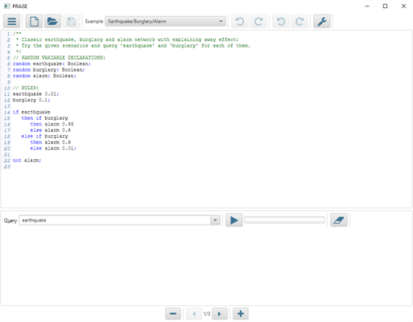

A Probabilistic Reasoning As Symbolic Evaluation (PRAiSE) library, developed at SRI International's Artificial Intelligence Centern, which implements the ideas present in the following paper:
de Salvo Braz, R., O'Reilly, C., Gogate, V., Dechter, R., "Probabilistic Inference Modulo Theories", International Joint Inference in Artificial Intelligence 2016 (IJCAI-16).
The current library and demo (below) is capable of performing probabilistic inference on models defined with equality on categorical types, equality and inequalities over integers, and propositional variables. In the future, we will also have linear real arithmetic, algebraic data types, and random functions (also described as relational variables, or uninterpreted functions).PRAiSE Demo App
http://aic-sri-international.github.io to the "Exception Site List", under the "Security" tab, within your Java Control Panel
(found here on Windows or here on Mac OS X).
